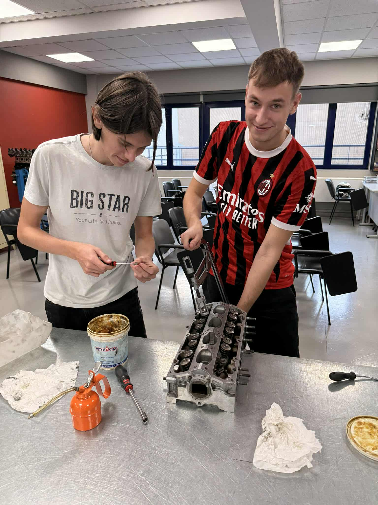
Tydzień 1 – Wkręcamy się w warsztat
Pierwszy dzień: szkolenie BHP, zapoznanie z wyposażeniem warsztatu, podnośnikami, narzędziami diagnostycznymi i zespołem.
Zaczęliśmy od wymiany olejów, filtrów, klocków i tarcz. Potem diagnostyka komputerowa, odczytywanie błędów, podstawy spawania MIG/MAG.
Po pracy plaża i pierwsze zimne piwo z mechanikami – od razu czuć klimat Grecji!
 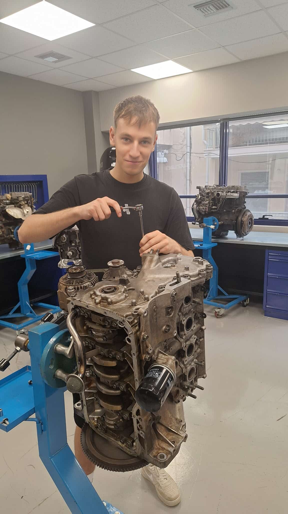
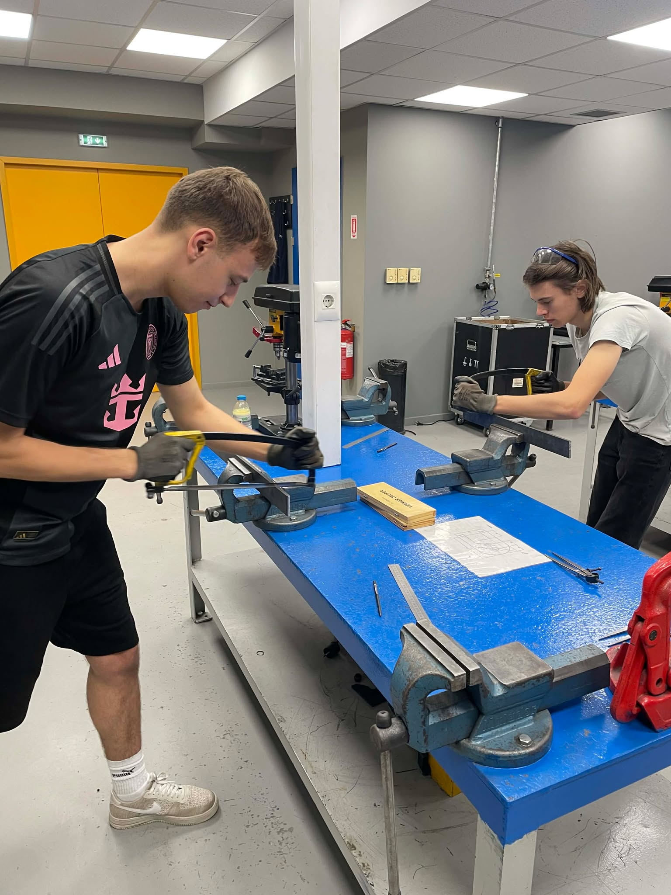
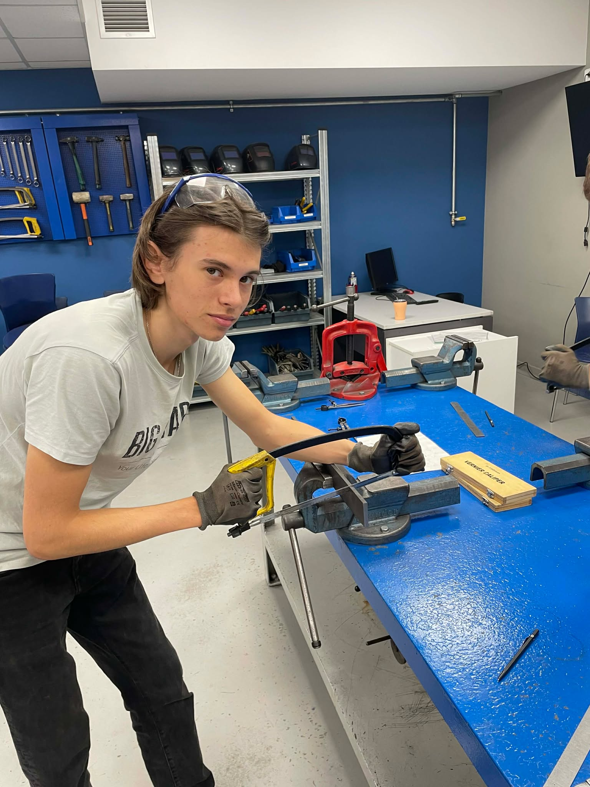
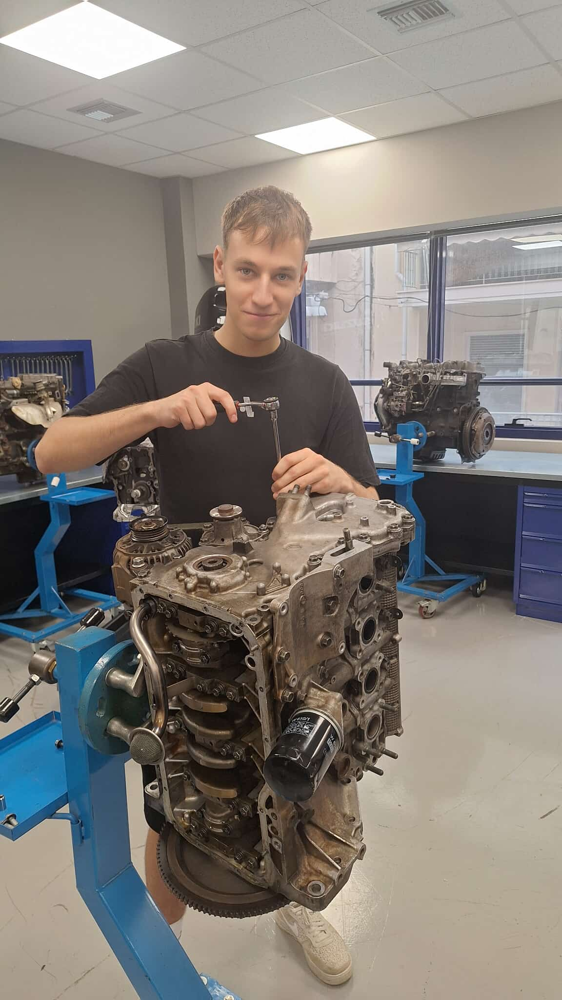
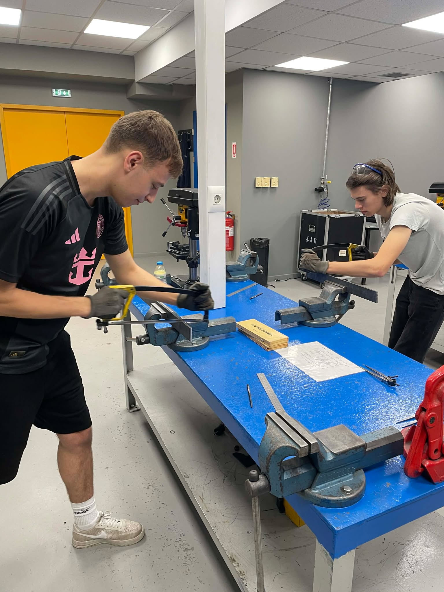
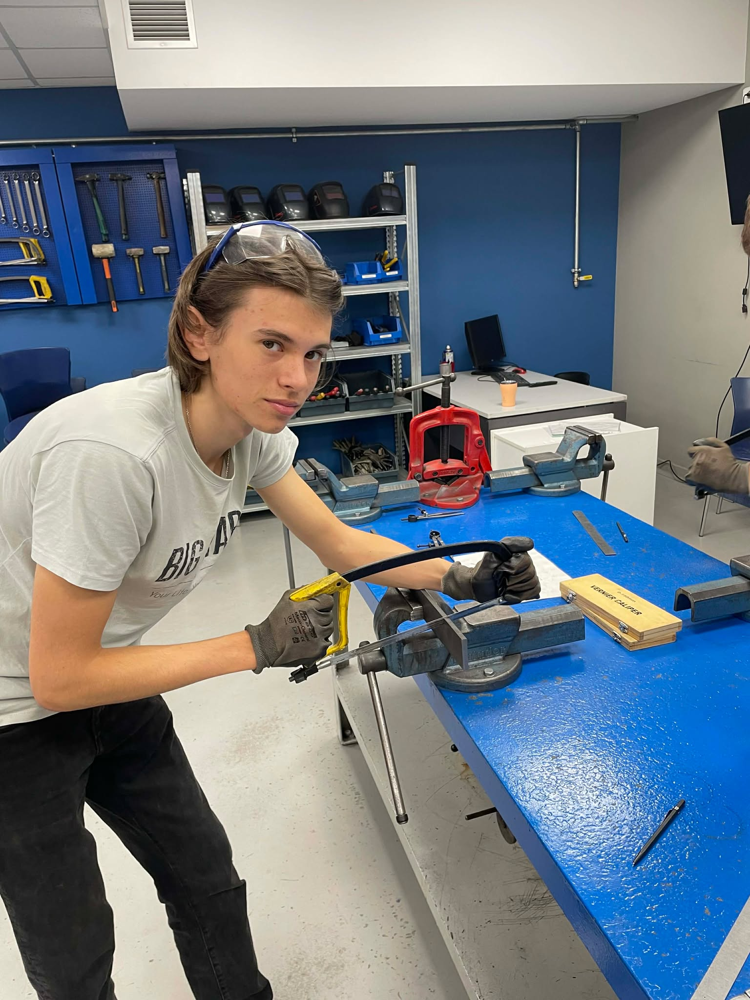
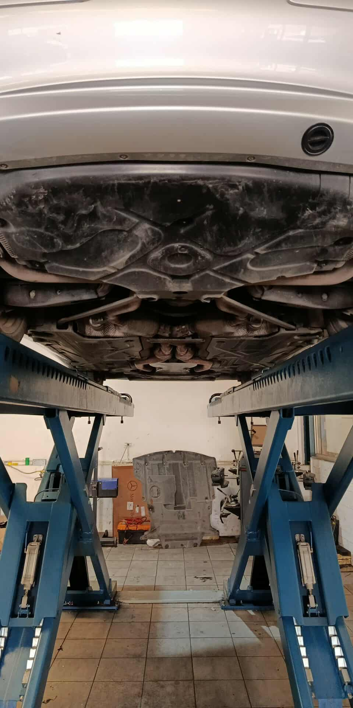
Tydzień 2 - wykręcanie sie od obowiazkow
Praca przy większych naprawach: wymiana sprzęgieł, regeneracja zacisków, serwis klimatyzacji, naprawa koparki i ładowarki.
Nauczyliśmy się spawania konstrukcji stalowych i cięcia plazmą. Ostatniego dnia wielka akcja – wymiana silnika w starym Land Roverze!
Pożegnalny grill z całym warsztatem, grecka muzyka i morze wrażeń. Wracamy jako prawdziwi mechanicy!
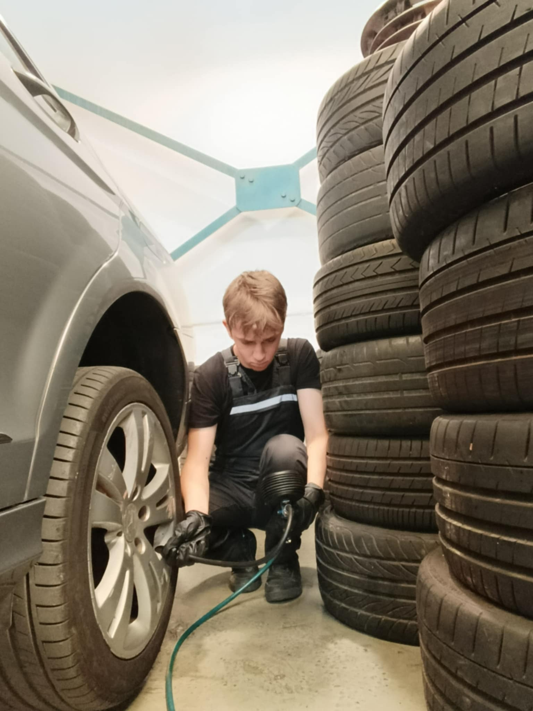
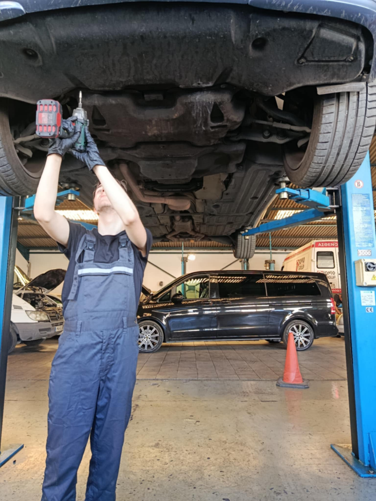
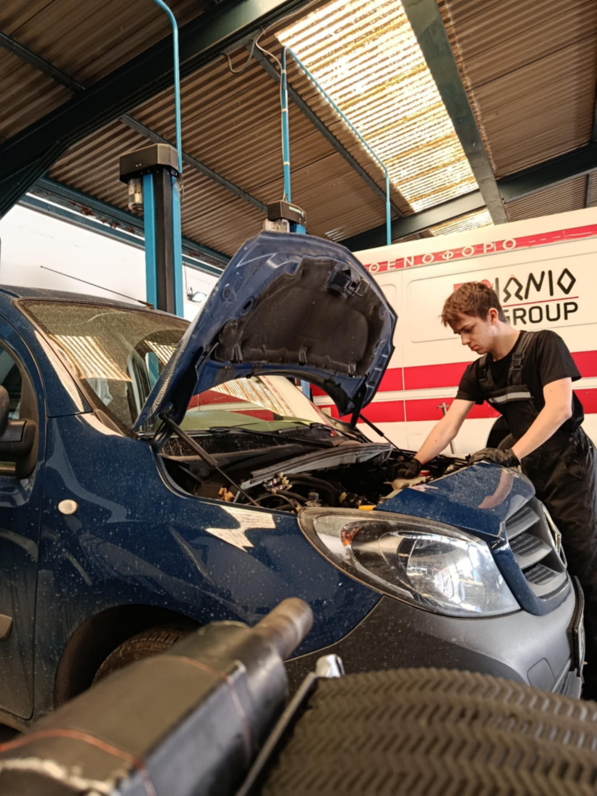
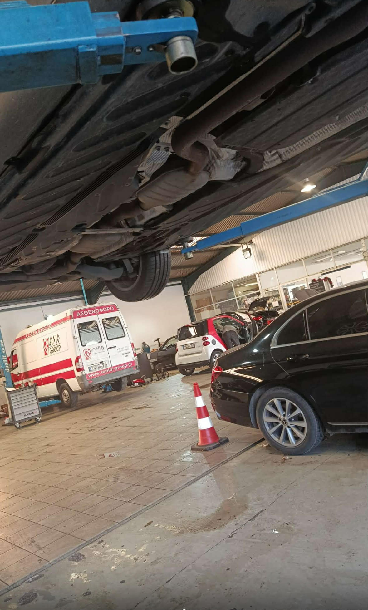
.svg.png)